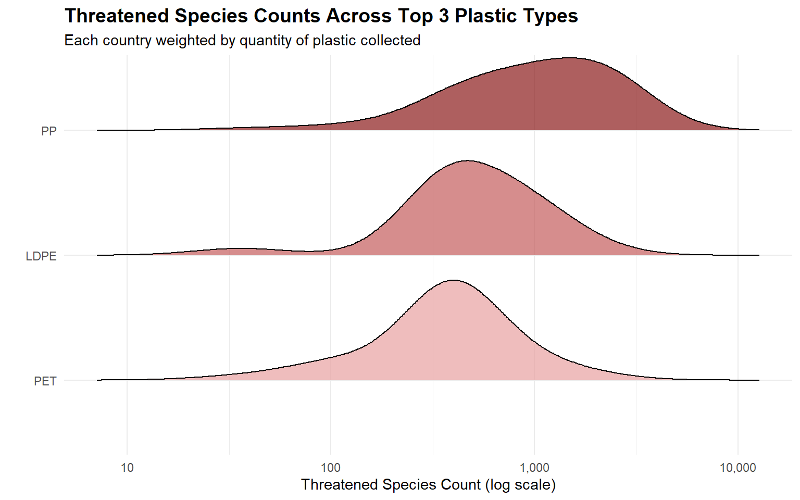

Countries Analyzed
45
Most Common Plastic Collected
PET
PET Drop: Low → High Biodiversity
50.2 pp
Significant Predictor of PET
Species
Hover over each bar for plastic waste breakdown:
PET = polyester, HDPE = high density polyethylene, LDPE = low density polyethylene, PP = polypropylene, PS = polystyrene, PVC, Other
Hover over each bar for plastic waste breakdown:
PET = polyester, HDPE = high density polyethylene, LDPE = low density polyethylene, PP = polypropylene, PS = polystyrene, PVC, Other
Hover over each bar for plastic waste breakdown:
PET = polyester, HDPE = high density polyethylene, LDPE = low density polyethylene, PP = polypropylene, PS = polystyrene, PVC, Other

PP is collected in the most biodiverse countries, while PET dominates in nations with fewer threatened species. LDPE falls in between.